Provides qualitative, diverging and sequential colour schemes.
colour(palette, reverse = FALSE, names = TRUE, ...) color(palette, reverse = FALSE, names = TRUE, ...)
| palette | A |
|---|---|
| reverse | A |
| names | A |
| ... | Further arguments passed to |
A palette function that when called with a single integer argument (the number of levels) returns a vector of colours.
The following palettes are available. The maximum number of supported colours is in brackets, this value is only relevant for the qualitative colour schemes (divergent and sequential schemes are linearly interpolated).
bright (7), contrast (3), vibrant (7), muted (9), pale (6), dark (6), light (9).
sunset (11), BuRd (9), PRGn (9).
YlOrBr (9), iridescent (23), discrete rainbow (23), smooth rainbow (34).
According to Paul Tol's technical note, the bright, contrast,
vibrant and muted colour schemes are colour-blind safe.
The light colour scheme is reasonably distinct for both normal or
colour-blind vision and is intended to fill labelled cells.
The pale and dark schemes are not very distinct in either
normal or colour-blind vision and should be used as a text background or
to highlight a cell in a table.
Refer to the original document for details about the recommended uses (see references).
As a general rule, ordered data should not be represented using a rainbow scheme. There are three main arguments against such use (Tol 2018):
The spectral order of visible light carries no inherent magnitude message.
Some bands of almost constant hue with sharp transitions between them, can be perceived as jumps in the data.
Colour-blind people have difficulty distinguishing some colours of the rainbow.
If such use cannot be avoided, Paul Tol's technical note provides two colour schemes that are reasonably clear in colour-blind vision. To remain colour-blind safe, these two schemes must comply with the following conditions:
This scheme must not be interpolated.
This scheme does not have to be used over the full range.
The following (qualitative) colour schemes are available:
International Chronostratigraphic Chart (175 colours).
AVHRR Global Land Cover Classification (14 colours).
FAO Reference Soil Groups (24 colours).
Jones, A., Montanarella, L. & Jones, R. (Ed.) (2005). Soil atlas of Europe. Luxembourg: European Commission, Office for Official Publications of the European Communities. 128 pp. ISBN: 92-894-8120-X.
Tol, Paul (2018). Colour Schemes. SRON. Technical Note No. SRON/EPS/TN/09-002. URL: https://personal.sron.nl/~pault/data/colourschemes.pdf
Commission for the Geological Map of the World
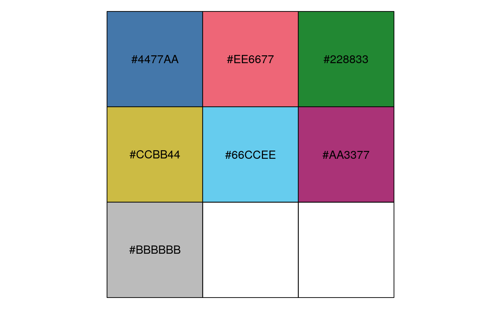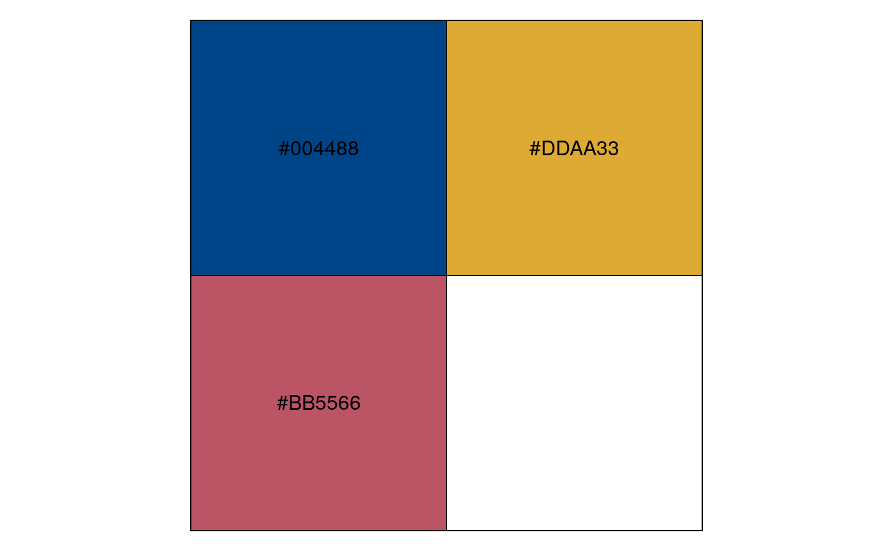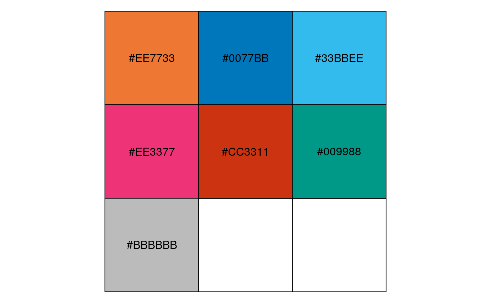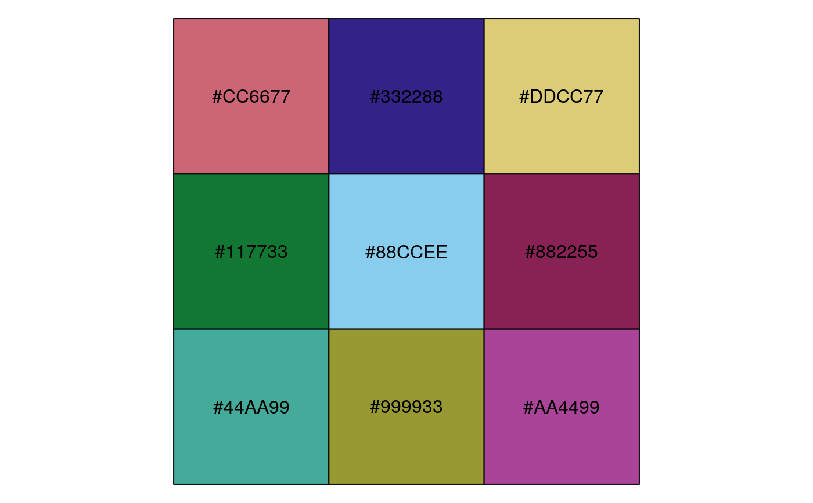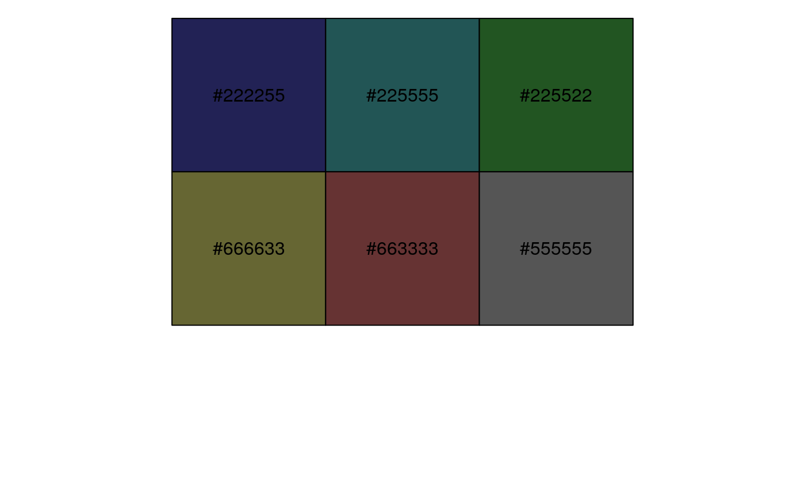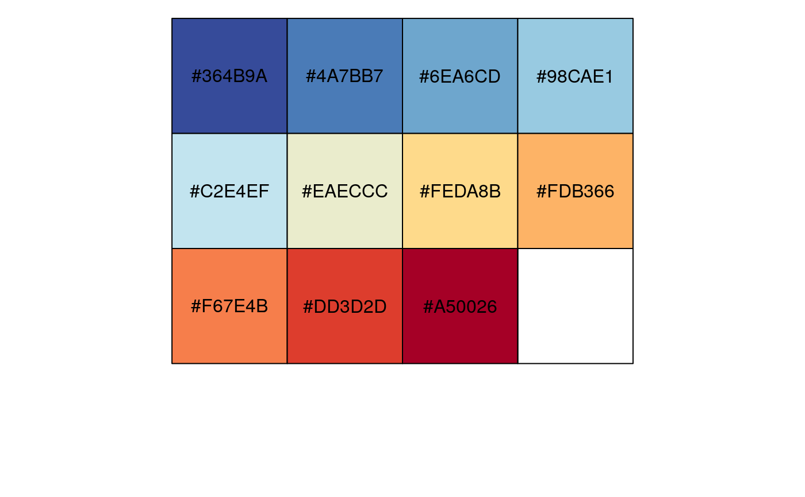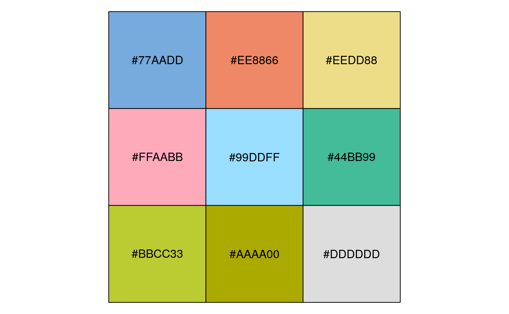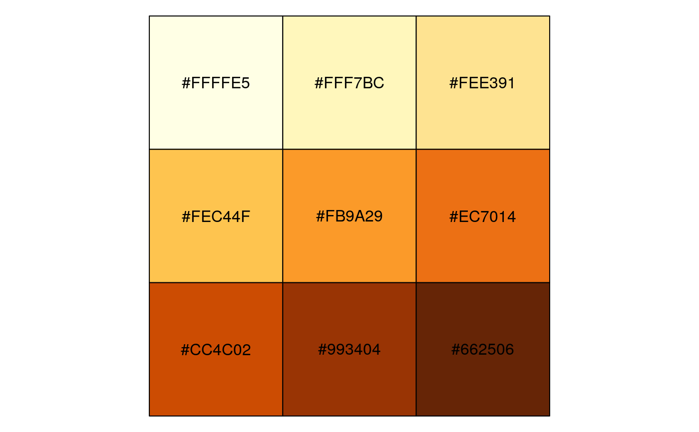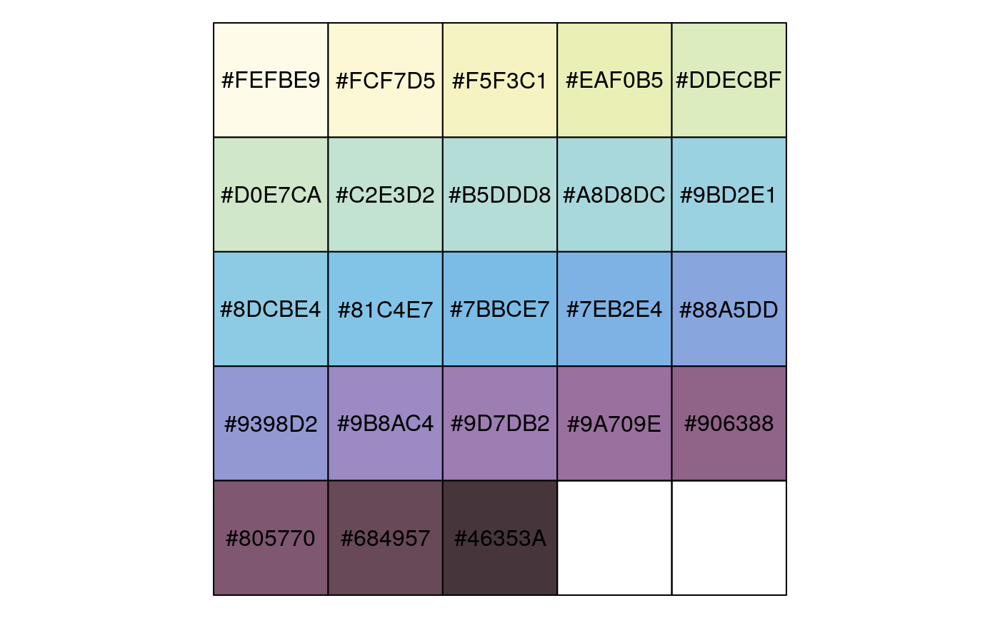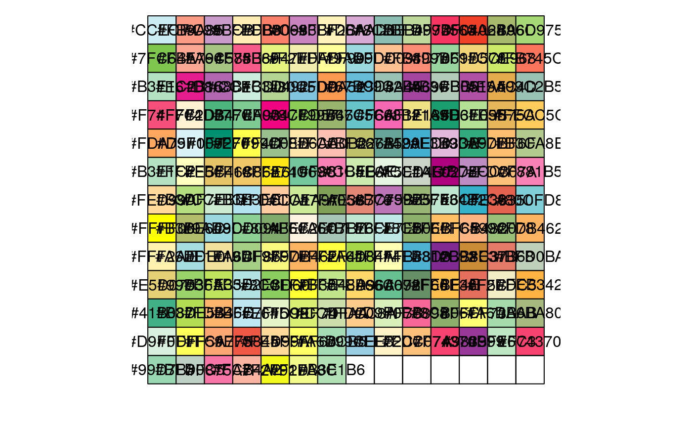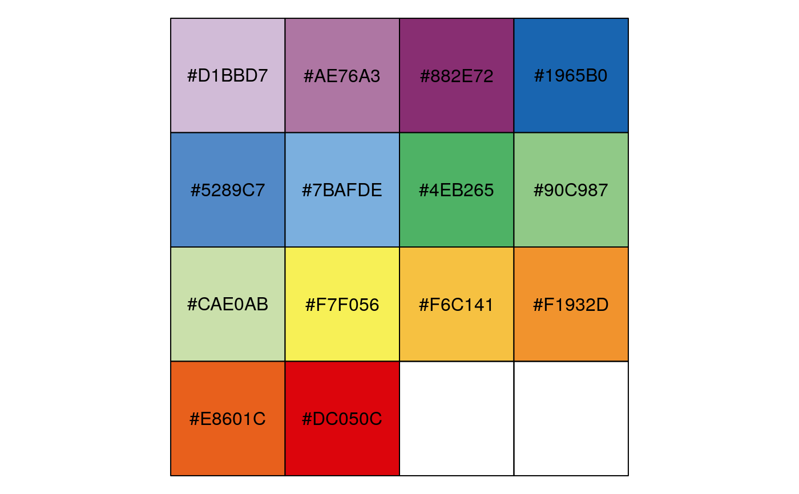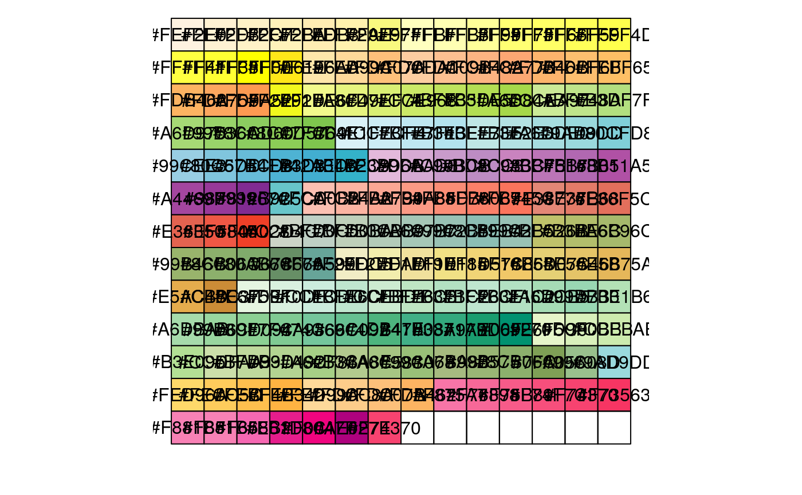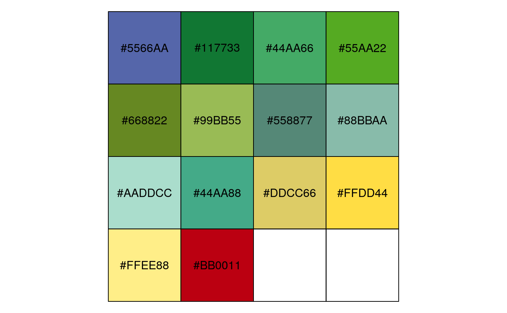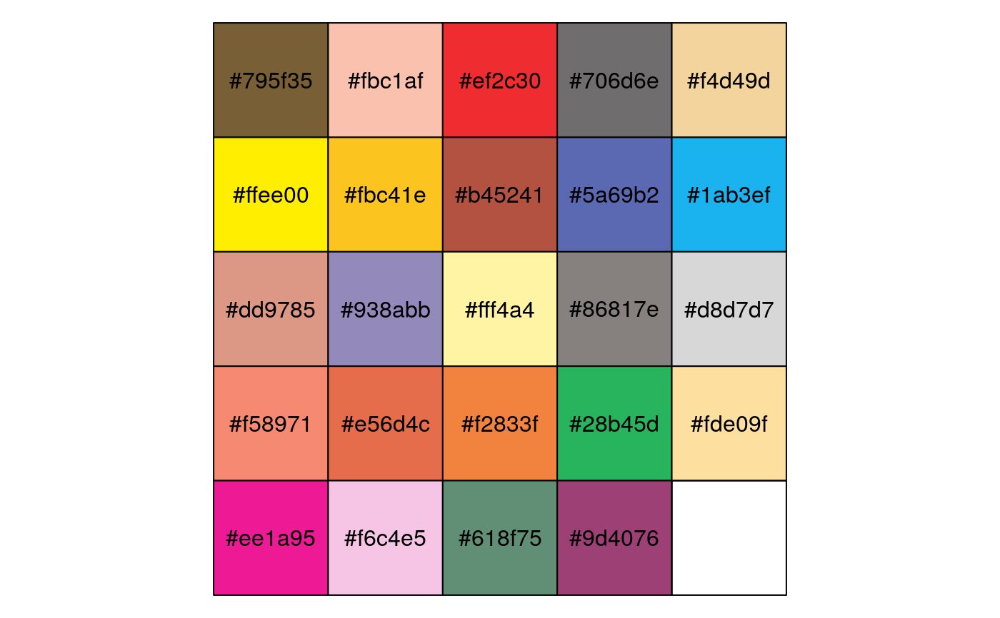